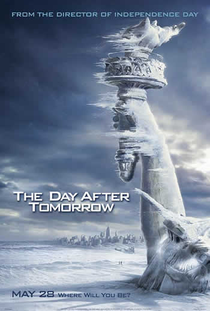

|
InterestelarDireção: Christopher Nolan | Roteiro: Jonathan Nolan, Christopher Nolan | Elenco: Matthew McConaughey, Anne Hathaway, Michael Caine | Ano de lançamento: 2014. SinopseApós ver a Terra consumindo boa parte de suas reservas naturais, um grupo de astronautas recebe a missão de verificar possíveis planetas para receberem a população mundial, possibilitando a continuação da espécie. Cooper (Matthew McConaughey) é chamado para liderar o grupo e aceita a missão sabendo que pode nunca mais ver os filhos. Ao lado de Brand (Anne Hathaway), Jenkins (Marlon Sanders) e Doyle (Wes Bentley), ele seguirá em busca de uma nova casa. Com o passar dos anos, sua filha Murph (Mackenzie Foy e Jessica Chastain) investirá numa própria jornada para também tentar salvar a população do planeta. |
Ficção Científica
Guardiões da Galáxia, vol. 3Direção: James Gunn | Roteiro: James Gunn | Elenco: Chris Pratt, Zoe Saldana, Dave Bautista | Ano de lançamento: 2023. SinopseEm Guardiões da Galáxia Vol. 3, o amado grupo de desajustados busca se estabelecer em Lugar Nenhum,mas não demora muito para que suas vidas sejam reviradas pelos ecos do passado turbulento de Rocket (Bradley Cooper).Ainda se recuperando da perda de Gamora (Zoe Saldana), após os acontecimentos de Vingadores: Guerra Infinita (2018), Peter Quill (Chris Pratt) reúne sua equipe para defender o universo e um companheiro de equipe. Mas esta missão pode significar o fim dos Guardiões como conhecemos, se ela não for bem-sucedida. Encerramento da trilogia iniciada em 2014,sendo a continuação de Guardiões da Galáxia Vol. 2 (2017). |
Assista o Triller
O Preço do AmanhãDireção: Andrew Niccol | Roteiro: Andrew Niccol | Elenco: Amanda Seyfried, Justin Timberlake, Cillian Murphy | Ano de lançamento: 2011. Não recomendado para menos de 12 anos SinopseEm um futuro próximo, o envelhecimento passou a ser controlado para evitar a superpopulação, tornando o tempo a principal moeda de troca para sobreviver e também obter luxos. Assim, os ricos vivem mais que os pobres, que precisam negociar sua existência, normalmente limitada aos 25 anos de vida. Quando Will Salas (Justin Timberlake) recebe uma misteriosa doação, passa a ser perseguido pelos guardiões do tempo por um crime que não cometeu, mas ele sequestra Sylvia (Amanda Seyfried), filha de um magnata, e do novo relacionamento entre vítima e algoz surge uma poderosa arma com o sistema e organização que comanda o futuro das pessoas. |
Assista o Triller
|  |
O Dia Depois de AmanhãDireção: Roland Emmerich | Roteiro: Roland Emmerich, Jeffrey Nachmanoff | Elenco: Jake Gyllenhaal, Dennis Quaid, Emmy Rossum | Ano de lançamento: 2004 SinopseA Terra sofre alterações climáticas que modificam drasticamente a vida da humanidade. Com o norte se resfriando cada vez mais e passando por uma nova era glacial, milhões de sobreviventes rumam para o sul. Porém o paleoclimatologista Jack Hall (Dennis Quaid) segue o caminho inverso e parte para Nova York, já que acredita que seu filho Sam (Jake Gyllenhaal) ainda está vivo. |